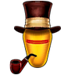
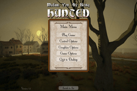
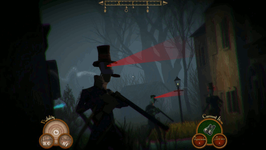
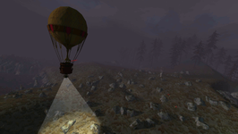
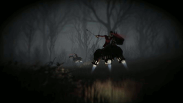

Sir, You Are Being Hunted
Dieser Artikel wurde für die folgenden Ubuntu-Versionen getestet:
Ubuntu 14.04 Trusty Tahr
Zum Verständnis dieses Artikels sind folgende Seiten hilfreich:
 Gentlemen, die Jagd ist eröffnet! Tweed-tragende Robotor und mechanische Bluthunde sind dem titelgebenden Sir oder der Madam auf der Fährte. Wer ihnen nicht auf den Leim gehen will, muss Nahrungsmittel plündern, Waffen und Munition auftreiben und besonders die magischen Runensteine finden, um das Archipel lebend zu verlassen und der Gesellschaft durch die Lappen zu gehen. Doch die weiß, wie der Hase läuft, und wird jeden Runenstein bewachen, den sie entdeckt. Verstecken und Schleichen sind gefragt, keine Schießereien: Wer sein Pulver verschießt, wird in diesem Spiel auf der Strecke bleiben.
Da die Inseln bei jedem neuen Spielstart prozedural erstellt werden, ist jede Flucht vor den metallenen Jägern einzigartig. Doch je erfolgreicher man ihnen entwischt und je mehr Runensteine man sammelt, desto mehr Roboter durchstreifen die Landstriche und Städte und selbst die Lüfte. Der Weltgenerator bietet allerdings viele Möglichkeiten, das Schwierigkeitsniveau den eigenen Überlebenskünsten anzupassen, damit niemand die Flinte ins Korn werfen muss.
Vorbereitung¶
Ein Grafiktreiber mit 3D-Beschleunigung ist erforderlich.
Benutzer eines 64-Bit-Systems müssen zudem einige 32-Bit-Pakete installieren [1]:
|  |  |  |  |
| Spiel-Menü | Sie tragen Zylinder, … | … fliegen Heißluftballon, … | … und sie werden Sie finden, Sir. |
lib32gcc1 (32-Bit-Paket)
libc6-i386 (32-Bit-Paket)
libc6:i386 (32-Bit-Paket)
libgcc1:i386 (32-Bit-Paket)
libglu1-mesa:i386 (32-Bit-Paket)
libstdc++6:i386 (32-Bit-Paket)
libx11-6:i386 (32-Bit-Paket)
libxau6:i386 (32-Bit-Paket)
libxcb1:i386 (32-Bit-Paket)
libxcursor1:i386 (32-Bit-Paket)
libxdmcp6:i386 (32-Bit-Paket)
libxext6:i386 (32-Bit-Paket)
libxfixes3:i386 (32-Bit-Paket)
libxrender1:i386 (32-Bit-Paket)
 mit apturl
mit apturl
Paketliste zum Kopieren:
sudo apt-get install lib32gcc1 libc6-i386 libc6:i386 libgcc1:i386 libglu1-mesa:i386 libstdc++6:i386 libx11-6:i386 libxau6:i386 libxcb1:i386 libxcursor1:i386 libxdmcp6:i386 libxext6:i386 libxfixes3:i386 libxrender1:i386
sudo aptitude install lib32gcc1 libc6-i386 libc6:i386 libgcc1:i386 libglu1-mesa:i386 libstdc++6:i386 libx11-6:i386 libxau6:i386 libxcb1:i386 libxcursor1:i386 libxdmcp6:i386 libxext6:i386 libxfixes3:i386 libxrender1:i386
Außerdem wird eine passende 32-Bit-Version von libgl1-mesa-glx benötigt. Benutzer von LTS-Versionen haben möglicherweise ein LTS Enablement Stack installiert und müssen daher auch die dazu passende Version von libgl1-mesa-glx wählen. Die folgenden Terminalbefehle [2] installieren die richtige Version:
pkg=$(dpkg-query -l libgl1-mesa-glx | grep -m1 ^ii[[:space:]]* | grep -o libgl1-mesa-glx[[:graph:]]* | sed -r s/:\(i386\|amd64\)/""/g) sudo apt-get install $pkg:i386
Wer kein LTS Enablement Stack installiert hat, wählt bedenkenlos das folgende Paket:
libgl1-mesa-glx:i386 (32-Bit-Paket)
mit apturl
Paketliste zum Kopieren:
sudo apt-get install libgl1-mesa-glx:i386
sudo aptitude install libgl1-mesa-glx:i386
Spieldateien beziehen¶
Das Spiel ist im Humble Store, bei GOG.com und bei Steam erhältlich.
Installation¶
Wer das Spiel nicht in Steam erworben hat, muss das Spiel zunächst installieren.
GOG.com¶
Wer sich für die GOG.com-Version entschied, kann zwischen einem DEB-Paket und einem Archiv wählen. Wenn man das Spiel mit dem DEB-Paket installiert [6], werden die Spieldateien ins Verzeichnis /opt/GOG Games/ kopiert, und Programmstarter werden automatisch angelegt. Auf die gleiche Weise werden auch aktualisierte Versionen installiert.
Humble Store¶
Wer das Spiel im Humble Store erwirbt, lädt die Archivdatei siryouarebeinghunted_linux_1401380671 herunter (die Zahlenfolge kann sich unterscheiden und muss dann im Folgenden angepasst werden), erstellt ein geeignetes Spielverzeichnis (zum Beispiel ~/Spiele/Sir, You Are Being Hunted) und entpackt [3] den im Archiv enthaltenen Ordner linux in dieses Spielverzeichnis. Auf die gleiche Weise werden auch aktualisierte Versionen installiert.
Spiel starten¶
Steam-Benutzer und GOG.com-Kunden starten das Spiel wie gewohnt.
Humble Store¶
Die Version des Humble Store liefert keinen üblichen Programmstarter mit, sondern wird im Spielverzeichnis mit der Datei linux/sir_v1.1 gestartet. Möglicherweise muss sie zuvor ausführbar [4] gemacht werden.
Ein Programmstarter kann allerdings leicht selbst erstellt werden. Dazu öffnet man einen Texteditor [5] und fügt die folgenden Zeilen dort ein:
[Desktop Entry] Name=Sir, You Are Being Hunted GenericName=Überlebenskampf in einer offenen Spielwelt Comment=Schleichen und überleben mit Tee und Gebäck Exec="/home/Benutzername/Spiele/Sir, You Are Being Hunted/linux/sir_v1.1" Icon=/home/Benutzername/Spiele/Sir, You Are Being Hunted/linux/sir_v1_data/Resources/UnityPlayer.png Path=/home/Benutzername/Spiele/Sir, You Are Being Hunted/linux Terminal=false Type=Application Categories=Game;
Die Pfade für Exec, Icon und Path müssen natürlich angepasst werden (Benutzername gegen den tatsächlichen Benutzernamen tauschen, gegebenenfalls das Spielverzeichnis anpassen).
Die Datei speichert man als ~/.local/share/applications/sir-you-are-being-hunted.desktop – spätestens nach einer Neuanmeldung wird das Programm über die gängigen Programmsuchen gefunden. Wer einen Programmstarter auf der Arbeitsfläche sehen möchte, speichert die Datei als ~/Arbeitsfläche/sir-you-are-being-hunted.desktop und macht sie ausführbar [4].
Spielwelt erstellen¶
Es gibt insgesamt fünf Speicherplätze, die jeweils eine eigene Welt aufnehmen, die man zunächst seinen Wünschen gemäß erstellt. Zuvor wählt man einen Beruf für seinen Sir oder seine Madam aus, der die zu Beginn verfügbaren Gegenstände bestimmt. Für Anfänger sind "The Gamekeeper" oder "The Officer" empfehlenswert, weil sie mit einigen Vorräten an Lebensmitteln, Werkzeugen oder Waffen und Munition ausgestattet sind. Anschließend wählt man den Landschaftstyp aller fünf Inseln, die nicht nur für Abwechslung beim Erkunden der Inseln sorgen, sondern auch unterschiedliche Versteck- und Plündermöglichkeiten bieten – "Industrial"-Gebiete sind zum Beispiel größere Ortschaften mit vielen Gebäuden und lohnender Beute, aber auch vielen Robotern. Die Topographie der mittleren Insel ("Centre Island") kann nur geändert werden, wenn im Hauptmenü unter "Game Options" die Einstellung "Unlock advanced generation options" angekreuzt ist.
Auch die Zahl der Roboter in den einzelnen Phasen des Spiels kann erhöht oder reduziert werden, indem man im Menü "Edit Robots" auf die kleinen Balkendiagramme neben den Roboterklassen klickt. Wer sich gar nicht hetzen lassen will, kann die Inseln auf diese Weise auch völlig von Robotern befreien, was das Spielprinzip zwar untergräbt, aber den lediglich am Erkunden des Archipels interessierten Spielern entgegen kommt.
Ein Klick auf "Build" setzt den Weltgenerator in Gang, der je nach System und Detaileinstellungen etwas Zeit benötigt.
Steuerung¶
Das Spiel unterstützt Controller.
| Tastenkürzel | |
| Taste(n) | Funktion |
 | Steuerung |
| Q | Nach links lehnen |
| E | Nach rechts lehnen |
| F | Interagieren |
| Springen | |
| C | In die Hocke gehen bzw. aufstehen |
| ⇧ links | Laufen an-/ausschalten |
 | Schießen |
 | Zielen |
| R | Nachladen |
| I | Inventar |
| H | Verband anlegen |
| 1 bis 7 | Schnellzugriff auf Gegenstände |
| M | Karte |
 hoch/runter hoch/runter | Kamerazoom bzw. den vorigen/nächsten Gegenstand auswählen |
| Alt | Kamera bewegen, ohne den Körper bewegen zu müssen (nur wenn TrackIR in den Steuerungseinstellungen deaktiviert oder im Spiel nicht aktiv ist) |
| * (Nummernblock) | Bildschirmfoto (wird im Ordner linux/sir_v1_Data im Spielverzeichnis gespeichert) |
| / (Nummernblock) | Interface ein-/ausblenden |
| . (Nummernblock) | FPS in der linken oberen Bildschirmecke ein-/ausblenden (die Taste existiert auf deutschen Tastaturen nicht, man kann stattdessen in "Control Options" eine andere Taste zuweisen) |
| Esc | Menü |
Problembehebung¶
Ladebildschirm hängt¶
Wenn die Spielwelt nicht geladen wird und der Ladebildschirm nicht mehr aktualisiert (in der Regel bei "Loading Regions"), wechselt man einfach mit Alt + Tab ⇆ aus dem Spiel und wieder zurück.

Infobox¶
| Sir, You Are Being Hunted | |
| Genre: | Stealth, Survival |
| Sprache: |  |
| Veröffentlichung: | 01. Mai 2014 |
| Entwickler: | Big Robot |
| Systemvoraussetzungen: | 500 MB Festplattenspeicher, 2,2-GHz-Prozessor, 2 GB RAM, Shader-Model-3.0-fähige Grafikkarte |
| Medien: | Download |
| Läuft mit: | nativ |
Links¶
Sir, You Are Being Hunted – Humble Store
Sir, You Are Being Hunted – GOG.com
Sir, You Are Being Hunted – Steam
- Erstellt mit Inyoka
-
 2004 – 2017 ubuntuusers.de • Einige Rechte vorbehalten
2004 – 2017 ubuntuusers.de • Einige Rechte vorbehalten
Lizenz • Kontakt • Datenschutz • Impressum • Serverstatus -
Serverhousing gespendet von